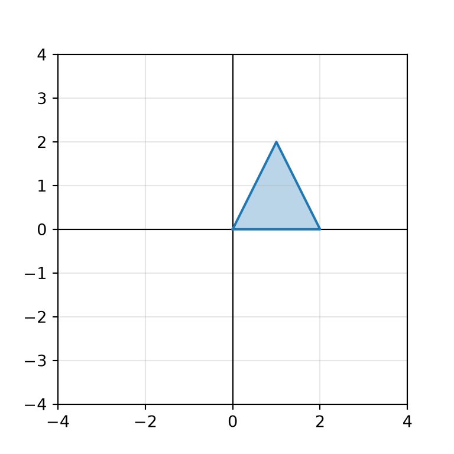
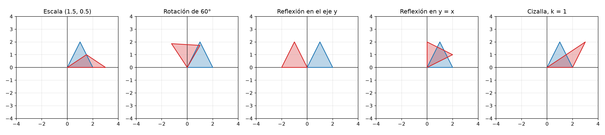
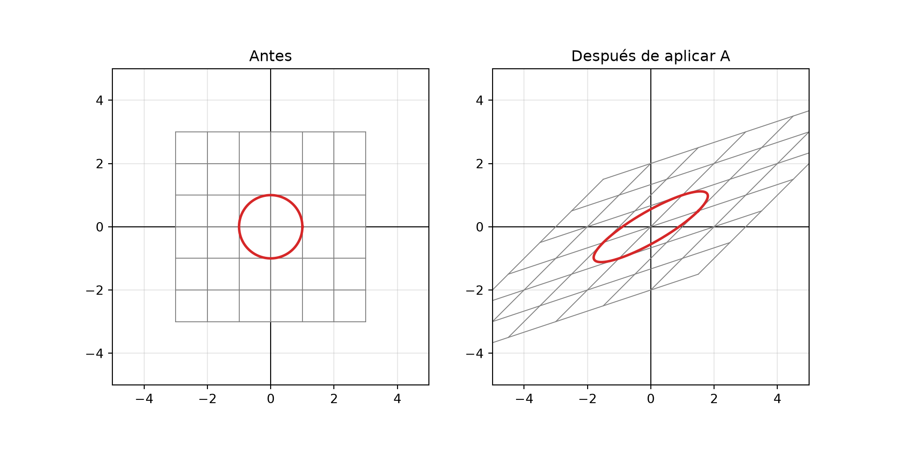
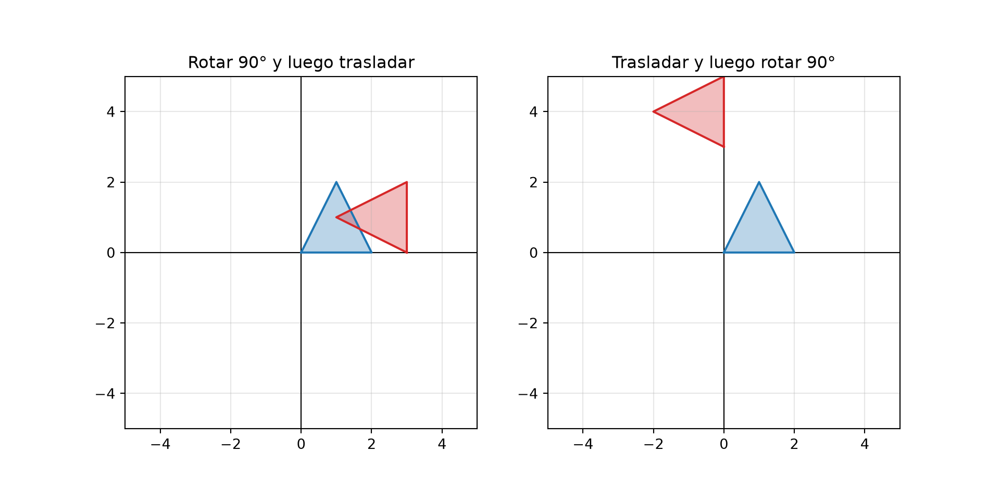
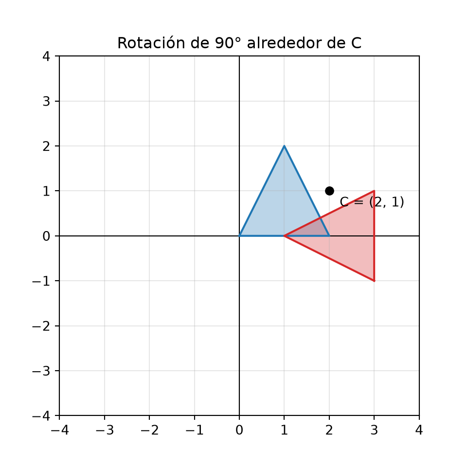
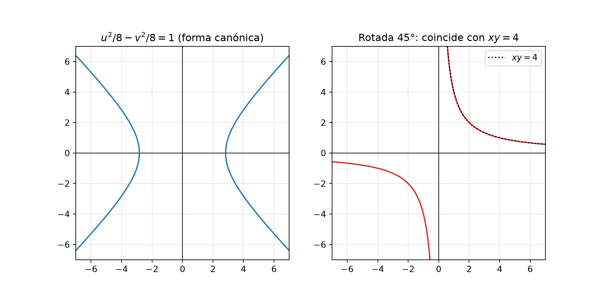
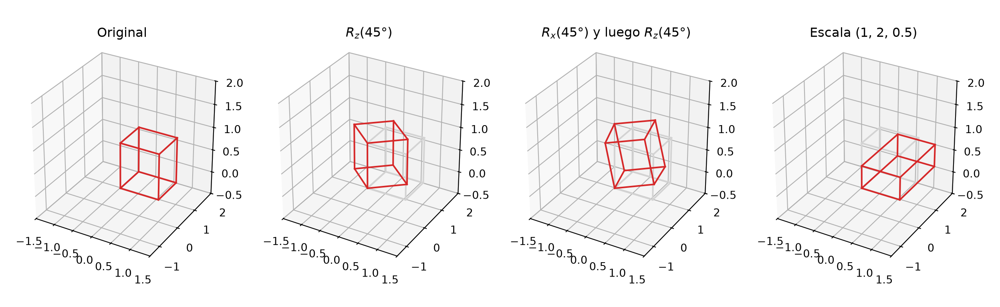

Código
import numpy as np
import matplotlib.pyplot as pltFecha: 26 de noviembre, 2026
Mover, girar, agrandar o reflejar una figura son transformaciones geométricas. Aparecen en geometría analítica (rotación y traslación de ejes), en álgebra lineal, en gráficas por computadora y en videojuegos. En este capítulo las representaremos con matrices de NumPy y visualizaremos su efecto con Matplotlib.
Al terminar este capítulo podrás:
import numpy as np
import matplotlib.pyplot as pltUna transformación geométrica es una regla \(T\) que a cada punto \(P\) del plano (o del espacio) le asigna otro punto \(P' = T(P)\), su imagen. Al aplicarla a todos los puntos de una figura, obtenemos una figura transformada.
| Transformación | ¿Qué hace? | ¿Conserva distancias? | ¿Conserva la forma? |
|---|---|---|---|
| Traslación | Desplaza la figura. | Sí | Sí |
| Rotación | Gira la figura alrededor de un punto. | Sí | Sí |
| Reflexión | Refleja la figura respecto a una recta, como un espejo. | Sí | Sí (pero invierte la orientación) |
| Escalamiento | Agranda o reduce la figura. | No | Sí, si la escala es igual en todas las direcciones |
| Cizalla | “Inclina” la figura, como un mazo de cartas empujado. | No | No |
Las tres primeras conservan las distancias, por eso se llaman isometrías (movimientos rígidos).
Para transformar una figura con NumPy, guardamos sus vértices como columnas de una matriz de \(2 \times n\): la primera fila tiene las coordenadas \(x\) y la segunda las coordenadas \(y\).
# Triángulo con vértices (0, 0), (2, 0) y (1, 2)
triangulo = np.array([[0, 2, 1], # coordenadas x
[0, 0, 2]]) # coordenadas y
print(triangulo.shape) # 2 filas, 3 puntos(2, 3)Para no repetir el código de las gráficas, escribimos dos funciones: una que prepara el plano y otra que dibuja una figura cerrada (uniendo el último vértice con el primero):
def plano(ax, limite=4):
"""Prepara ax como plano cartesiano con ejes en el origen y misma escala."""
ax.axhline(0, color="black", linewidth=0.8)
ax.axvline(0, color="black", linewidth=0.8)
ax.set_xlim(-limite, limite)
ax.set_ylim(-limite, limite)
ax.set_aspect("equal")
ax.grid(True, alpha=0.3)
def dibujar(ax, figura, **opciones):
"""Dibuja el polígono cuyos vértices son las columnas de figura (2 × n)."""
cerrada = np.hstack([figura, figura[:, :1]]) # Agregar el primer vértice al final
ax.fill(cerrada[0], cerrada[1], alpha=0.3, **opciones)
ax.plot(cerrada[0], cerrada[1], **opciones)
fig, ax = plt.subplots(figsize=(4, 4))
plano(ax)
dibujar(ax, triangulo, color="tab:blue")
plt.show()
np.hstack() pega matrices horizontalmente (agrega columnas) y figura[:, :1] es la primera columna: así el polígono queda cerrado.
Muchas transformaciones que dejan fijo el origen se escriben como una matriz \(M\) de \(2 \times 2\). Transformar un punto es multiplicar la matriz por el vector del punto:
\[\begin{pmatrix} x' \\ y' \end{pmatrix} = M \begin{pmatrix} x \\ y \end{pmatrix}\]
Y como los puntos de nuestra figura son las columnas de una matriz, una sola multiplicación M @ figura transforma todos los vértices a la vez.
| Transformación | Matriz | Efecto |
|---|---|---|
| Escalamiento | \(\begin{pmatrix} s_x & 0 \\ 0 & s_y \end{pmatrix}\) | Multiplica \(x\) por \(s_x\) y \(y\) por \(s_y\). |
| Rotación de ángulo \(\theta\) | \(\begin{pmatrix} \cos\theta & -\sin\theta \\ \sin\theta & \cos\theta \end{pmatrix}\) | Gira \(\theta\) radianes en sentido contrario a las manecillas del reloj. |
| Reflexión en el eje \(x\) | \(\begin{pmatrix} 1 & 0 \\ 0 & -1 \end{pmatrix}\) | \((x, y) \to (x, -y)\) |
| Reflexión en el eje \(y\) | \(\begin{pmatrix} -1 & 0 \\ 0 & 1 \end{pmatrix}\) | \((x, y) \to (-x, y)\) |
| Reflexión en la recta \(y = x\) | \(\begin{pmatrix} 0 & 1 \\ 1 & 0 \end{pmatrix}\) | \((x, y) \to (y, x)\) |
| Cizalla horizontal | \(\begin{pmatrix} 1 & k \\ 0 & 1 \end{pmatrix}\) | \((x, y) \to (x + ky, y)\) |
def rotacion(theta):
"""Matriz de rotación de ángulo theta (en radianes)."""
return np.array([[np.cos(theta), -np.sin(theta)],
[np.sin(theta), np.cos(theta)]])
transformaciones = {
"Escala (1.5, 0.5)": np.array([[1.5, 0], [0, 0.5]]),
"Rotación de 60°": rotacion(np.radians(60)),
"Reflexión en el eje y": np.array([[-1, 0], [0, 1]]),
"Reflexión en y = x": np.array([[0, 1], [1, 0]]),
"Cizalla, k = 1": np.array([[1, 1], [0, 1]]),
}
fig, axs = plt.subplots(1, 5, figsize=(17, 3.8))
for ax, (nombre, M) in zip(axs, transformaciones.items()):
plano(ax)
dibujar(ax, triangulo, color="tab:blue")
dibujar(ax, M @ triangulo, color="tab:red")
ax.set_title(nombre)
fig.tight_layout()
plt.show()
En azul está la figura original y en rojo su imagen.
El determinante de la matriz dice cómo cambia el área de cualquier figura y si se invierte su orientación:
for nombre, M in transformaciones.items():
print(f"{nombre:25s} det = {np.linalg.det(M):6.2f}")Escala (1.5, 0.5) det = 0.75
Rotación de 60° det = 1.00
Reflexión en el eje y det = -1.00
Reflexión en y = x det = -1.00
Cizalla, k = 1 det = 1.00| Determinante | Significado |
|---|---|
| \(\lvert\det M\rvert\) | Factor por el que se multiplica el área. |
| \(\det M = 1\) | Conserva el área y la orientación (como las rotaciones y las cizallas). |
| \(\det M < 0\) | Invierte la orientación: el triángulo queda “volteado”, como las reflexiones. |
| \(\det M = 0\) | Aplasta la figura sobre una recta o un punto. |
Una matriz transforma todo el plano, no solo una figura. Para verlo, transformemos una cuadrícula y la circunferencia unitaria:
def dibujar_cuadricula(ax, M, color):
"""Dibuja la imagen bajo M de las rectas x = k y y = k, para k = -3, ..., 3."""
t = np.linspace(-3, 3, 50)
for k in range(-3, 4):
vertical = M @ np.vstack([np.full_like(t, k), t])
horizontal = M @ np.vstack([t, np.full_like(t, k)])
ax.plot(vertical[0], vertical[1], color=color, linewidth=0.7)
ax.plot(horizontal[0], horizontal[1], color=color, linewidth=0.7)
A = np.array([[1.5, 1], [0.5, 1]])
t = np.linspace(0, 2 * np.pi, 200)
circulo = np.vstack([np.cos(t), np.sin(t)])
fig, axs = plt.subplots(1, 2, figsize=(10, 5))
for ax, M, titulo in [(axs[0], np.eye(2), "Antes"), (axs[1], A, "Después de aplicar A")]:
plano(ax, limite=5)
dibujar_cuadricula(ax, M, "tab:gray")
imagen = M @ circulo
ax.plot(imagen[0], imagen[1], color="tab:red", linewidth=2)
ax.set_title(titulo)
plt.show()
Las rectas siguen siendo rectas y paralelas, y la circunferencia se convierte en una elipse: así se comporta toda transformación lineal.
La traslación \((x, y) \to (x + t_x, y + t_y)\) no se puede escribir como una matriz de \(2 \times 2\), porque mueve el origen. Hay dos formas de hacerla:
1. Sumando un vector (con broadcasting de NumPy):
desplazamiento = np.array([[3], [1]]) # Vector columna (2 × 1)
trasladado = triangulo + desplazamiento # Se suma a cada columna
print(trasladado)[[3 5 4]
[1 1 3]]2. Con coordenadas homogéneas. Agregamos una tercera coordenada igual a 1: el punto \((x, y)\) se escribe \((x, y, 1)\). Así la traslación sí es una matriz de \(3 \times 3\):
\[\begin{pmatrix} x + t_x \\ y + t_y \\ 1 \end{pmatrix} = \begin{pmatrix} 1 & 0 & t_x \\ 0 & 1 & t_y \\ 0 & 0 & 1 \end{pmatrix} \begin{pmatrix} x \\ y \\ 1 \end{pmatrix}\]
def traslacion(tx, ty):
"""Matriz de traslación en coordenadas homogéneas (3 × 3)."""
return np.array([[1, 0, tx],
[0, 1, ty],
[0, 0, 1]])
def homogenea(M):
"""Convierte una matriz lineal de 2 × 2 en una matriz homogénea de 3 × 3."""
H = np.eye(3)
H[:2, :2] = M
return H
def a_homogeneas(figura):
"""Agrega una fila de unos a una figura de 2 × n."""
return np.vstack([figura, np.ones(figura.shape[1])])
tri_h = a_homogeneas(triangulo)
print(traslacion(3, 1) @ tri_h)[[3. 5. 4.]
[1. 1. 3.]
[1. 1. 1.]]La ventaja de las coordenadas homogéneas es que todas las transformaciones (rotación, escala, reflexión y traslación) se vuelven matrices de \(3 \times 3\) y se pueden combinar multiplicándolas.
Aplicar primero \(A\) y después \(B\) equivale a aplicar el producto \(BA\): la matriz que se aplica primero va a la derecha, más cerca del punto.
\[P' = B(A\,P) = (BA)\,P\]
Como el producto de matrices no es conmutativo, el orden cambia el resultado. Comparemos “girar 90° y luego trasladar 3 unidades a la derecha” con “trasladar y luego girar”:
R90 = homogenea(rotacion(np.pi / 2))
T = traslacion(3, 0)
primero_rotar = T @ R90 @ tri_h # Rotar y después trasladar
primero_trasladar = R90 @ T @ tri_h # Trasladar y después rotar
fig, axs = plt.subplots(1, 2, figsize=(10, 5))
for ax, resultado, titulo in [(axs[0], primero_rotar, "Rotar 90° y luego trasladar"),
(axs[1], primero_trasladar, "Trasladar y luego rotar 90°")]:
plano(ax, limite=5)
dibujar(ax, triangulo, color="tab:blue")
dibujar(ax, resultado[:2], color="tab:red")
ax.set_title(titulo)
plt.show()
La matriz de rotación gira alrededor del origen. Para girar alrededor de otro punto \(C\) se componen tres transformaciones:
\[M = T(C)\, R(\theta)\, T(-C)\]
C = (2, 1)
M = traslacion(*C) @ homogenea(rotacion(np.radians(90))) @ traslacion(-C[0], -C[1])
fig, ax = plt.subplots(figsize=(5, 5))
plano(ax, limite=4)
dibujar(ax, triangulo, color="tab:blue")
dibujar(ax, (M @ tri_h)[:2], color="tab:red")
ax.scatter(*C, color="black", zorder=3)
ax.annotate("C = (2, 1)", C, xytext=(8, -12), textcoords="offset points")
ax.set_title("Rotación de 90° alrededor de C")
plt.show()
El operador * en traslacion(*C) desempaqueta la tupla: equivale a traslacion(2, 1).
En geometría analítica, rotar los ejes un ángulo \(\theta\) permite eliminar el término \(xy\) de una ecuación. Las coordenadas cambian según:
\[x = u\cos\theta - v\sin\theta, \qquad y = u\sin\theta + v\cos\theta\]
Para la hipérbola \(xy = 4\) (ejercicio 1c de la parte II), con \(\theta = 45°\):
import sympy as sp
u, v = sp.symbols("u v", real=True)
theta = sp.pi / 4
x_rot = u * sp.cos(theta) - v * sp.sin(theta)
y_rot = u * sp.sin(theta) + v * sp.cos(theta)
nueva = sp.expand(x_rot * y_rot - 4)
print(nueva, "= 0")u**2/2 - v**2/2 - 4 = 0\(\frac{u^2}{2} - \frac{v^2}{2} - 4 = 0\) es lo mismo que \(\frac{u^2}{8} - \frac{v^2}{8} = 1\): una hipérbola en su forma canónica, con los ejes rotados 45°. Lo comprobamos girando la hipérbola canónica con nuestra matriz de rotación:
s = np.linspace(-2, 2, 200)
rama = np.vstack([np.sqrt(8) * np.cosh(s), np.sqrt(8) * np.sinh(s)]) # u²/8 - v²/8 = 1 (rama derecha)
fig, axs = plt.subplots(1, 2, figsize=(10, 5))
for ax in axs:
plano(ax, limite=7)
axs[0].plot(rama[0], rama[1], color="tab:blue")
axs[0].plot(-rama[0], rama[1], color="tab:blue")
axs[0].set_title("$u^2/8 - v^2/8 = 1$ (forma canónica)")
girada = rotacion(np.pi / 4) @ rama
axs[1].plot(girada[0], girada[1], color="tab:red")
axs[1].plot(-girada[0], -girada[1], color="tab:red")
xs = np.linspace(0.3, 7, 100)
axs[1].plot(xs, 4 / xs, "k:", label="$xy = 4$")
axs[1].legend()
axs[1].set_title("Rotada 45°: coincide con $xy = 4$")
plt.show()
La curva roja (la canónica rotada) coincide con la gráfica de \(y = 4/x\) (punteada).
En el espacio, los puntos tienen tres coordenadas y las transformaciones lineales son matrices de \(3 \times 3\). Hay una matriz de rotación para cada eje:
\[R_x(\theta) = \begin{pmatrix} 1 & 0 & 0 \\ 0 & \cos\theta & -\sin\theta \\ 0 & \sin\theta & \cos\theta \end{pmatrix}, \quad R_y(\theta) = \begin{pmatrix} \cos\theta & 0 & \sin\theta \\ 0 & 1 & 0 \\ -\sin\theta & 0 & \cos\theta \end{pmatrix}, \quad R_z(\theta) = \begin{pmatrix} \cos\theta & -\sin\theta & 0 \\ \sin\theta & \cos\theta & 0 \\ 0 & 0 & 1 \end{pmatrix}\]
def rot_x(t):
return np.array([[1, 0, 0], [0, np.cos(t), -np.sin(t)], [0, np.sin(t), np.cos(t)]])
def rot_y(t):
return np.array([[np.cos(t), 0, np.sin(t)], [0, 1, 0], [-np.sin(t), 0, np.cos(t)]])
def rot_z(t):
return np.array([[np.cos(t), -np.sin(t), 0], [np.sin(t), np.cos(t), 0], [0, 0, 1]])Un cubo tiene 8 vértices y 12 aristas. Guardamos los vértices como columnas de una matriz de \(3 \times 8\) y las aristas como pares de índices:
from itertools import product
vertices = np.array(list(product([0, 1], repeat=3))).T # Las 8 combinaciones de 0 y 1
aristas = [(i, j) for i in range(8) for j in range(i + 1, 8)
if np.abs(vertices[:, i] - vertices[:, j]).sum() == 1] # Difieren en una coordenada
print("Vértices:", vertices.shape, " Aristas:", len(aristas))Vértices: (3, 8) Aristas: 12def dibujar_cubo(ax, V, color):
for i, j in aristas:
ax.plot(*zip(V[:, i], V[:, j]), color=color)
fig = plt.figure(figsize=(13, 4))
casos = [("Original", np.eye(3)), ("$R_z(45°)$", rot_z(np.pi / 4)),
("$R_x(45°)$ y luego $R_z(45°)$", rot_z(np.pi / 4) @ rot_x(np.pi / 4)),
("Escala (1, 2, 0.5)", np.diag([1, 2, 0.5]))]
for k, (titulo, M) in enumerate(casos, start=1):
ax = fig.add_subplot(1, 4, k, projection="3d")
dibujar_cubo(ax, vertices, "lightgray")
dibujar_cubo(ax, M @ vertices, "tab:red")
ax.set_xlim(-1.5, 1.5); ax.set_ylim(-1.5, 2); ax.set_zlim(-0.5, 2)
ax.set_box_aspect((1, 1, 1))
ax.set_title(titulo)
fig.tight_layout()
plt.show()
itertools.product([0, 1], repeat=3) genera las 8 combinaciones \((0,0,0), (0,0,1), \dots, (1,1,1)\), que son los vértices del cubo unitario. Dos vértices forman una arista si difieren en exactamente una coordenada.
Con Plotly podemos crear una animación con un cuadro por cada ángulo. Presiona ▶ o mueve la barra deslizante:
def lineas_cubo(V):
"""Regresa las coordenadas de las aristas separadas por None, para dibujarlas como una sola línea."""
xs, ys, zs = [], [], []
for i, j in aristas:
xs += [V[0, i], V[0, j], None]
ys += [V[1, i], V[1, j], None]
zs += [V[2, i], V[2, j], None]
return xs, ys, zs
angulos = np.radians(np.arange(0, 361, 15))
cuadros = []
for a in angulos:
xs, ys, zs = lineas_cubo(rot_z(a) @ vertices)
cuadros.append(go.Frame(data=[go.Scatter3d(x=xs, y=ys, z=zs, mode="lines", line={"width": 6})],
name=f"{np.degrees(a):.0f}°"))
xs, ys, zs = lineas_cubo(vertices)
fig = go.Figure(data=[go.Scatter3d(x=xs, y=ys, z=zs, mode="lines", line={"width": 6})], frames=cuadros)
fig.update_layout(
title="Rotación del cubo alrededor del eje z",
scene={"xaxis": {"range": [-1.5, 1.5]}, "yaxis": {"range": [-1.5, 1.5]}, "zaxis": {"range": [0, 1.5]},
"aspectmode": "cube"},
updatemenus=[{"type": "buttons", "buttons": [{"label": "▶", "method": "animate", "args": [None]}]}],
sliders=[{"steps": [{"label": c.name, "method": "animate", "args": [[c.name]]} for c in cuadros]}],
width=600, height=550,
)
fig.show()Las matrices se escriben en LaTeX con el entorno pmatrix (paréntesis) o bmatrix (corchetes). Las filas se separan con \\ y las columnas con &:
La rotación de ángulo $\theta$ es:
$$
R(\theta) = \begin{pmatrix} \cos\theta & -\sin\theta \\ \sin\theta & \cos\theta \end{pmatrix}
$$SymPy puede generar el código LaTeX de una matriz por ti con sp.latex():
th = sp.symbols("theta")
R = sp.Matrix([[sp.cos(th), -sp.sin(th)], [sp.sin(th), sp.cos(th)]])
print(sp.latex(R))\left[\begin{matrix}\cos{\left(\theta \right)} & - \sin{\left(\theta \right)}\\\sin{\left(\theta \right)} & \cos{\left(\theta \right)}\end{matrix}\right]print(sp.latex(R.subs(th, sp.pi / 6)))\left[\begin{matrix}\frac{\sqrt{3}}{2} & - \frac{1}{2}\\\frac{1}{2} & \frac{\sqrt{3}}{2}\end{matrix}\right]Y con la opción #| output: asis el resultado aparece directamente como fórmula en tu documento:
print(f"$$R(30°) = {sp.latex(R.subs(th, sp.pi / 6))}, \\qquad \\det R = {sp.latex(sp.simplify(R.det()))}$$")\[R(30°) = \left[\begin{matrix}\frac{\sqrt{3}}{2} & - \frac{1}{2}\\\frac{1}{2} & \frac{\sqrt{3}}{2}\end{matrix}\right], \qquad \det R = 1\]
Recomendaciones para documentar una transformación:
label: fig-... y fig-cap para numerar las figuras y citarlas con @fig-... (lo vimos en la parte III).Resuelve los ejercicios en los editores interactivos. Recuerda que lo que escribas no se guarda al recargar la página. La revisión de los ejercicios con funciones prueba tu función con varios valores.
Completa la función rotacion(theta) que regresa la matriz de rotación de \(2 \times 2\). Comprueba que \(R(90°)\) lleva el punto \((1, 0)\) a \((0, 1)\).
La primera fila es np.cos(theta), -np.sin(theta) y la segunda np.sin(theta), np.cos(theta).
def rotacion(theta):
"""Matriz de rotación de ángulo theta (radianes)."""
return np.array([[np.cos(theta), -np.sin(theta)],
[np.sin(theta), np.cos(theta)]])
print(np.round(rotacion(np.pi / 2) @ np.array([1, 0]), 10)) # [0. 1.]Al triángulo de vértices \((0, 0)\), \((2, 0)\) y \((1, 2)\) aplícale primero un escalamiento \(S\) con \(s_x = 2\), \(s_y = 0.5\) y después una reflexión \(F\) en el eje \(x\). Grafica el original y la imagen. Deja la figura transformada en la última línea.
S = np.array([[2, 0], [0, 0.5]]), F = np.array([[1, 0], [0, -1]]) y imagen = F @ S @ triangulo.
S = np.array([[2, 0], [0, 0.5]])
F = np.array([[1, 0], [0, -1]])
imagen = F @ S @ triangulo # [[0, 4, 2], [0, 0, -1]]En este caso el orden no importa (\(FS = SF\), porque ambas son diagonales), pero en general sí.
Aplica al punto \(P = (1, 0)\), en coordenadas homogéneas, la rotación de 90° y la traslación \((3, 0)\) en los dos órdenes posibles. Deja la tupla (primero_rotar, primero_trasladar) con las coordenadas \((x, y)\) de cada resultado en la última línea.
La matriz que se aplica primero va a la derecha, junto al punto: “rotar y después trasladar” es T @ R @ P.
primero_rotar = T @ R @ P # [3. 1. 1.]
primero_trasladar = R @ T @ P # [0. 4. 1.]Escribe la función rotar_alrededor(punto, centro, theta) que rote el punto \((x, y)\) un ángulo theta alrededor del centro \((c_x, c_y)\) y regrese las nuevas coordenadas como un arreglo de dos elementos. Usa la composición \(T(C)\, R(\theta)\, T(-C)\).
M = traslacion(cx, cy) @ rotacion_h(theta) @ traslacion(-cx, -cy): primero se lleva el centro al origen (derecha), luego se rota y al final se regresa (izquierda).
def rotar_alrededor(punto, centro, theta):
"""Rota punto un ángulo theta alrededor de centro."""
cx, cy = centro
M = traslacion(cx, cy) @ rotacion_h(theta) @ traslacion(-cx, -cy)
P = np.array([punto[0], punto[1], 1])
return (M @ P)[:2]Completa las funciones rot_x(t) y rot_z(t). Después rota el punto \((1, 0, 0)\) 90° alrededor del eje \(z\) y el punto \((0, 1, 0)\) 90° alrededor del eje \(x\).
En ambas matrices, el bloque de rotación es \(\begin{pmatrix} \cos t & -\sin t \\ \sin t & \cos t \end{pmatrix}\): el -np.sin(t) va arriba a la derecha y el np.sin(t) abajo a la izquierda.
def rot_x(t):
return np.array([[1, 0, 0],
[0, np.cos(t), -np.sin(t)],
[0, np.sin(t), np.cos(t)]])
def rot_z(t):
return np.array([[np.cos(t), -np.sin(t), 0],
[np.sin(t), np.cos(t), 0],
[0, 0, 1]])La ecuación \(x^2 + xy + y^2 = 6\) es una elipse rotada: el término \(xy\) indica que sus ejes no son paralelos a los ejes coordenados. Para una ecuación \(Ax^2 + Bxy + Cy^2 = F\), el ángulo que elimina el término \(xy\) cumple \(\cot 2\theta = \frac{A - C}{B}\); como aquí \(A = C\), el ángulo es \(\theta = 45°\).
contour().x = u * sp.cos(theta) - v * sp.sin(theta) y y = u * sp.sin(theta) + v * sp.cos(theta). Usa sp.cos y sp.sin (no los de NumPy) para obtener resultados exactos.
x = u * sp.cos(theta) - v * sp.sin(theta)
y = u * sp.sin(theta) + v * sp.cos(theta)
nueva = sp.expand(x**2 + x*y + y**2 - 6)
print(nueva, "= 0") # 3*u**2/2 + v**2/2 - 6 = 0\(\frac{3u^2}{2} + \frac{v^2}{2} = 6\) equivale a \(\frac{u^2}{4} + \frac{v^2}{12} = 1\): una elipse con semieje \(2\) en la dirección del eje \(u\) (a 45°) y \(2\sqrt{3}\) en la dirección del eje \(v\).
| Tema | Idea clave | NumPy |
|---|---|---|
| Figura | Vértices como columnas de una matriz \(2 \times n\) (o \(3 \times n\)). | np.array([[x...], [y...]]) |
| Transformación lineal | \(P' = MP\); transforma todos los vértices a la vez. | M @ figura |
| Rotación | \(\begin{pmatrix} \cos\theta & -\sin\theta \\ \sin\theta & \cos\theta \end{pmatrix}\) | np.cos, np.sin |
| Escala, reflexión, cizalla | Matrices diagonales, con \(-1\) o con un término fuera de la diagonal. | np.diag() |
| Determinante | Factor de área; negativo si invierte la orientación. | np.linalg.det(M) |
| Traslación | Suma de un vector o matriz homogénea \(3 \times 3\). | Broadcasting o traslacion(tx, ty) |
| Composición | Aplicar \(A\) y luego \(B\) es \(BA\): el orden importa. | B @ A @ figura |
| Rotar alrededor de \(C\) | \(T(C)\,R(\theta)\,T(-C)\) | Producto de tres matrices |
| 3D | Rotaciones \(R_x\), \(R_y\), \(R_z\) de \(3 \times 3\). | rot_z(t) @ vertices |
| Geometría analítica | Rotar los ejes elimina el término \(xy\) de una cónica. | SymPy: subs / expand |
numpy.linalg)